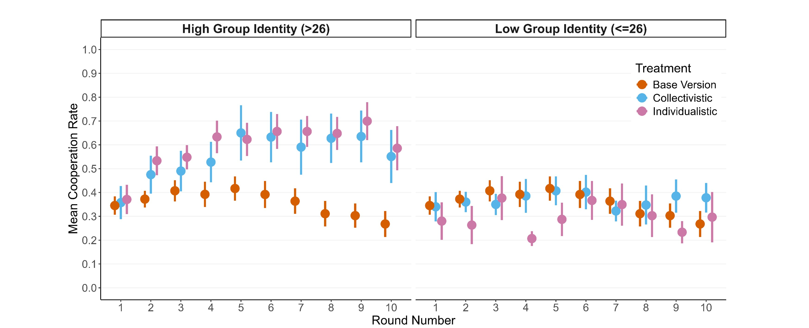

Individualism: The end of social cohesion? The effects of inequality and group identity on cooperation
Senn, S., Mutzner, N., Oberhauser, V., & Rauhut, H. (2025). Frontiers in Behavioral Economics, 4.
I study human–AI interaction and cooperation through experimental methods. Below is an overview of my work, working papers, teaching and selected projects.
I am a PhD student in Sociology at the University of Zurich studying Human–AI cooperation in social dilemmas and group decision-making. My work combines behavioral experiments with sociological concepts. I teach experimental design in the age of AI and develop classroom replications using synthetic participants.
People cheat more when they believe oversight is algorithmic rather than human. Framing the system as a simple automation exacerbates violations, while complex AI framing pulls behavior closer to human inspection. Design & presentation of automated inspectors directly shape compliance.
Senn, S., Mutzner, N., Oberhauser, V., & Rauhut, H. (2025). Frontiers in Behavioral Economics, 4.
Wang, N., Mutzner, N., & Blanchet, K. (2025). Science and Public Policy, 52(3), 356–374.
Wang, N., Mutzner, N., & Blanchet, K. (2023). Technology in Society, 75, 102377.
Mlynar, J., Bahrami, F., Ourednik, A., Mutzner, N., Verma, H., & Alavi, H. (2022). Proceedings of CHI 2022, 1–13.
Ourednik, A., Mlynář, J., Bahrami, F., Mutzner, N., & Alavi, H. (2021, March). Conference contribution.
Ourednik, A., Mlynář, J., Mutzner, N., & Alavi, H. (2021). Interactions, 28(6), 62–66.
Godazgar, T., Mutzner, N., Yasseri, T. (2025).
Mutzner, N., Yasseri, T. (2025).
Mutzner, N., Velicu, A., Rauhut, H. (2025).
Joint research centre dedicated to understanding how AI and automation are reshaping society.
Bridging the «Wisdom Gap» through research and innovation across sectors and cultures.
SNSF Spark Grant 2019 towards establishing a sociological conception of AI.
Poster Topic: Human–AI Cooperation: Leveraging AI Norm Reinforcement in a Public Goods Game.
View PosterParticipated in the Synthetic Replication Games Workshop hosted by talkingtomachines.
I’m always happy to connect about research, collaborations, or teaching ideas. Drop me a message or find me on the platforms below.
Email: nico.mutzner@uzh.ch
Office: University of Zurich, Department of Sociology